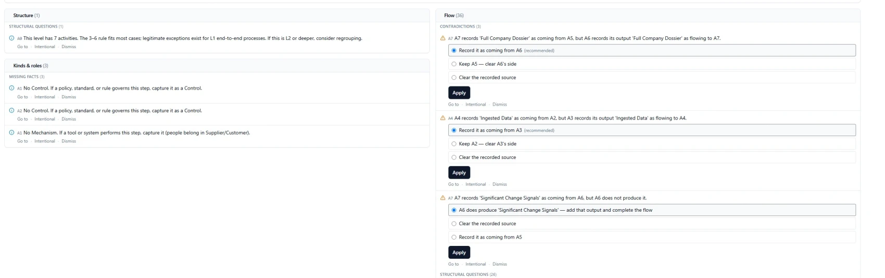
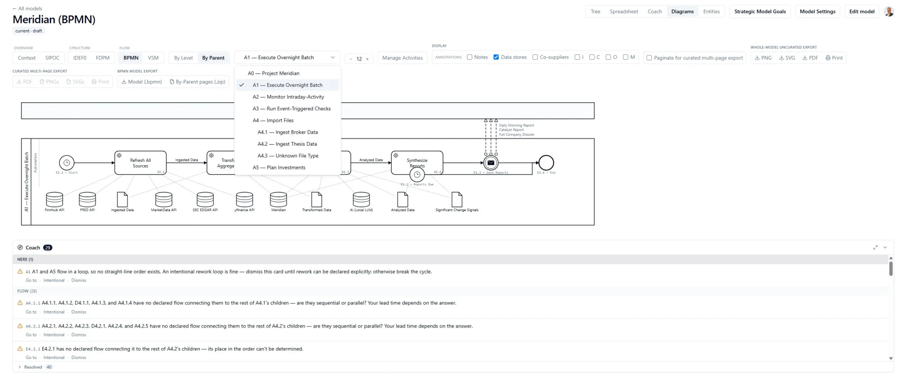
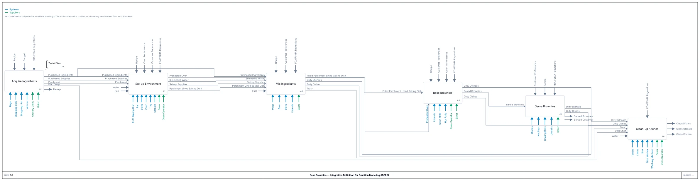
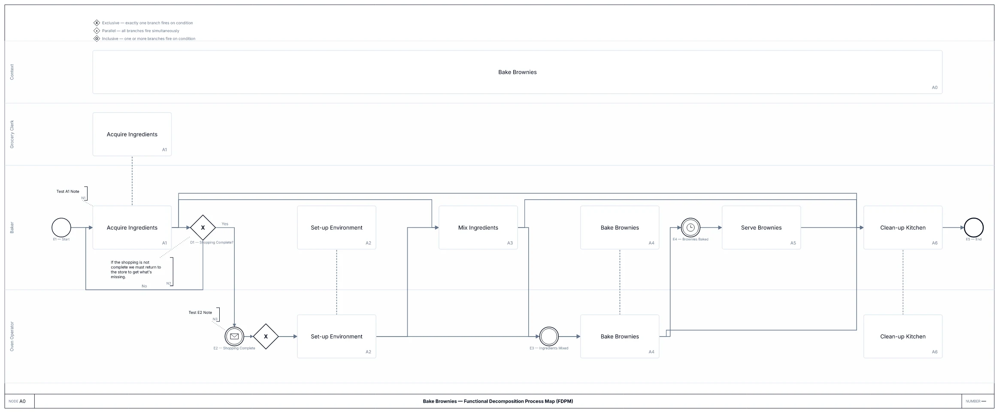
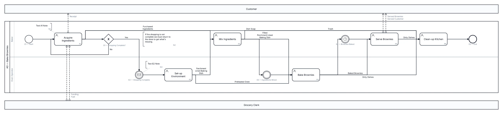
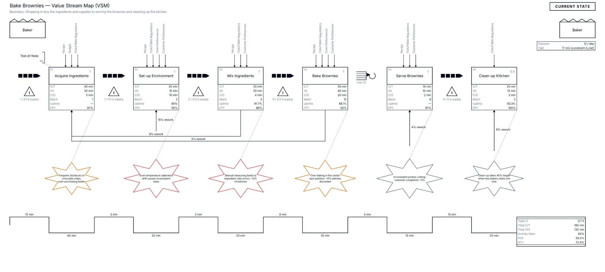
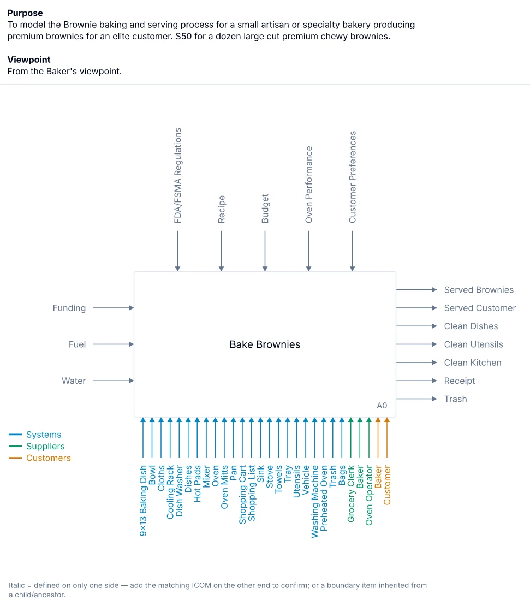
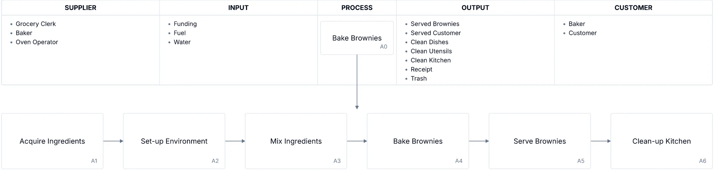
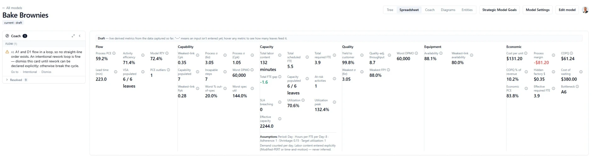

Systems
I have spent thirty-one years doing one thing. First procedures, then governance models, then pipelines, now software. Forester is the sixth time, and this time the expertise being encoded is my own.
Forester · product, seventeen sprints, not publicly launched
Most process tools draw a picture. This one captures the process as data, then draws every picture from it. What follows is the actual sequence, using two real models: a client engagement mid-build, and a reference model already resolved.
01 · The problem
Two people describe the same handoff differently. One activity claims an input that nothing upstream produces. A diagram gets signed off because it looks right, and every number derived from it inherits the error. At scale a human reviewer cannot hold the whole graph in mind, so the contradictions survive.

A tool that finds nothing proves nothing. This is what working looks like.
02 · Resolution
The third finding is the interesting one. Rather than only flagging a missing output, the Coach infers it: “A6 does produce Significant Change Signals. Add that output and complete the flow.” One click writes it into the model. That is the difference between a tool that validates and a tool that builds alongside you, and it is where the hours go.
Findings are scoped: HERE for what is wrong at the current node, FLOW for what is wrong across the model. Nothing blocks saving. Advisory by design, because a methodology that refuses your work does not get used.
03 · One model, many lenses
The languages are not exports. They are projections of the same knowledge graph, so a single ICOM arrow is simultaneously a graph edge feeding the IDEF0 diagram, a labelled flow in the BPMN, and an input to the rolled-up yield calculation. Change the model and every view changes with it.

.bpmn. The Coach runs against whatever is on
screen.
04 · The output
Below is one reference model, Bake Brownies, rendered six ways. Nothing here was drawn. A practitioner who would have spent hours on a single Visio diagram gets the whole set the moment the model exists, at every decomposition level.
Three are recognized industry standards. One is proprietary. Two are executive one-pagers. And yes, the process is a brownie recipe: if the method holds on something you can check against your own kitchen, the domain was never the hard part.






05 · Instrumented, not drawn
This is the part that separates a diagram from a management instrument. Every metric is organized by the lens that cares about it, so a COO and a CFO read the same model in their own language rather than a shared wall of numbers.

Note the assumptions line. Labor content is entered explicitly, never inferred.
Where this actually stands. Phase 1 is feature complete and in active hardening. The capture schema, the derived-metric algorithms, all six visual languages, full import and export round-trip, and the Coach are shipped and dogfooded on a live client engagement. The executive dashboards, the AI interview agent, and multi-tenant activation are the phases still ahead.
It is not publicly launched, and the product name is not final.
Meridian · client engagement, in build under contract
An AI-assisted research system for a private investor. Discovery came first: requirements, evaluation of twelve candidate data providers, and the system architecture, all delivered and invoiced before a line of production code was written.
The part worth pausing on: I modeled the client's operating process in Forester before designing anything, and that model became the architecture's top-level decomposition. The method produced the tool, the tool structured the engagement, and the engagement validated both. That loop is the whole argument of this page, and it closed on someone else's money.
Now in production build: twelve ingestion sources into PostgreSQL, an analytics layer, and a reporting surface. The nightly transform ran seven hours and nobody knew where the time actually went, so I stopped guessing and profiled it. Two rewrites I had already built, a numpy vectorization and a parallel staging path, turned out to be aimed at the same 23% of the runtime. The window functions were 13.4 seconds of a 59 second recompute. The write was the other 46.
So the wins were the unglamorous ones: narrower stored rows, an autovacuum gate, and a rebuilt query that reads a hundred times fewer pages. Seven hours to four. The vectorization was validated bit-exact across 7.3 million rows, measured 3.3× slower end to end because the write dominated, and stayed in the codebase behind a flag as a closed question rather than a failure.
Benson Academy · in production
A full-stack Next.js and TypeScript application, built solo and live, serving a multi-course curriculum.
The transferable part is the pipeline behind it. A grounded knowledge base is the source of truth, generation is constrained to it, custom Python handles asset automation, and a mandatory human review gate sits before publication. Research to published cycle time fell roughly eighty percent, with source traceability maintained and zero tolerance for unverified claims.
That architecture is the same shape any organization needs before it puts generative AI near customer-facing or regulated content: retrieval grounded in a source of record, and a human accountable at the gate.
Work sample · public and runnable
A take-home assessment for a government data engineering role: compare a legacy healthcare claims system against its replacement, find the discrepancies, and say whether the migration should proceed. Everything else on this page is work I scoped myself. This one I did not.
Most migration validations report row counts and null rates. I ran it as a quality problem instead: defects per million opportunities, sigma levels, and yield, field by field, rolled into a go/no-go scorecard an executive can read in one screen. The headline numbers looked good, 4.58σ on carrier claims and 4.68σ on beneficiary summary. The scorecard still said do not proceed, because 4,777 claims and 159 beneficiaries had gone missing outright and 82,699 payments disagreed. Good average quality was hiding categorical failures, which is exactly what a sigma-level view is for.
Built on DuckDB with chunked streaming for memory efficiency, SQLAlchemy, scipy for the inverse-normal sigma calculations, and a Streamlit dashboard with nine views. It runs end to end on CMS public synthetic data, so anyone can reproduce it.
On how it was built. The analysis was mine: which comparisons mattered, how to frame quality as a sigma problem, what the scorecard should say, and where the real risk sat. AI helped me write the queries faster than I would have written them alone. That is the same division of labor stated everywhere else on this site, and this is the one place you can go inspect it yourself.
If you are hiring for a role where the job is to go into something complicated and come back with clarity, I would like to talk about it.